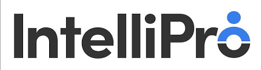
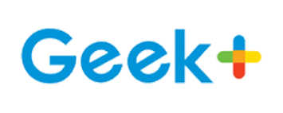
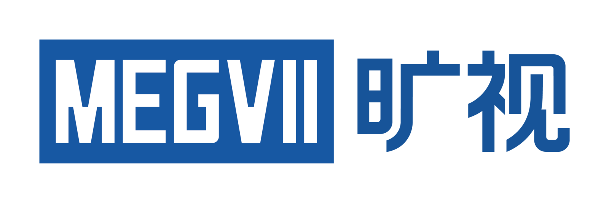
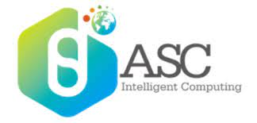

Experience

Amazon Web Services
Software Development Engineer Intern
Seattle, Washington, United States
June 2023 - September 2023
- Worked in AWS Amplify Backend team to build a Serverless infrastructure using Kinesis Data Stream, Lambda Functions, and CloudWatch.
- Centralized logs from multiple service accounts across various regions, automating ~2 hours of manual work per week for operational engineers.
- Enabled new avenues for data analysis by aggregating logs.
- Successfully deployed the infrastructure in multiple Amazon Pipelines, now actively used for generating weekly reports.
Amazon Web Services
Software Development Engineer Intern
Seattle, Washington, United States
August 2022 - December 2022
- Part of AWS Chime SDK team, developed an open-source library using AWS Lambda for managing PSTN Audio Service (SIP Media Application).
- Achieved an 85% reduction in user code and significantly decreased error rates during the development phase.

IntelliPro
Full Stack Engineer Intern
Santa Clara, California, United States
May 2022 - August 2022
- Built the livestream function for an online shopping website using ReactJS and NodeJs with WebRTC and Socket.IO, achieved a 500 ms delay and a high volume using SFU.
- Built a microservice for integration with Salesforce, Hubspot and Shopify. Implemented all with RESTful APIs with Spring Boot and Sprint Cloud, added a load balancer with Eureka, deployed with Docker and Kubernetes.

Geek+
Algorithm Intern
Beijing, China
August 2020 - December 2020
- Optimized A* algorithm variants to address distributed multi-agent pathfinding problems in a warehouse setting using Java.
- Supported an online competition by developing server-side baseline algorithms for multi-agent pathfinding using Python, Google Protocol Buffers, and gRPC.

MEGVII
Research Intern
Nanjing, Jiangsu, China
July 2019 - May 2020
- Worked on unmanned supermarket program, performed experiments on image retrieval task through loss function, backbone, metric learning architecture and other parts such as redundancy reduction in real industry dataset to improve model iteration speed and achieved 95% accuracy after deploying models into devices.

ASC18 Asian Student Supercomputer Challenge
First Prize in ASC18
Nanchang, Jiangxi, China
May 2018
- Aimed to complete the construction of the computational cluster for the purpose of High Performance Computing and to optimize the topics in the preliminary and finals of the competition on behalf of Southeast University
- Conducted parallel optimization of the two CPU application CFL3D (for Fluid mechanics) and SIESTA (for computational chemistry) and optimization of the GPU application RELION (for cryogenic electron microscopy, Nobel Prize for Chemistry, 2017) with OpenMP, Fortran, CUDA
- Assisted the team in building a cluster for High Performance Computing